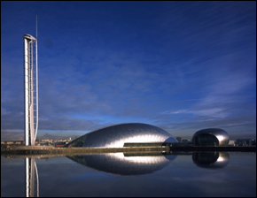
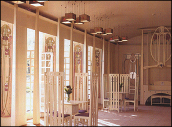
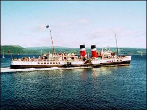

|  | Glasgow Science Centre | | | |  | House for an Art Lover | | | |  | Waverley |
Located on the west coast of Scotland, Glasgow, is by far largest city in Scotland with a population of approximately 609,370 people. Glasgow is undoubtedly one of Europe’s most dynamic cultural capitals: steeped in culture, rich in history, but above all alive with an excitement you can sense as you walk through its elegant streets, square, parks and gardens. The city has long been established as Scotland’s foremost cultural centre—it is home to Scottish Opera, the Royal Scottish National Orchestra, Scottish Ballet and several world-ranking theatre companies. Around the city there are numerous reminders of Glasgow’s impressive architectural heritage, not least some of the finest Victorian architecture in Europe. Equally remarkable are the unique styles of Charles Rennie Mackintosh and Alexander "Greek" Thomson. There is an abundance of bars and restaurants to suit all tastes. There are museums and art galleries in the city centre and as Glasgow is the largest shopping destination outside London there are stores to suit every taste in fashion.
Read a June 25 NY Times Article, entitled Scotland's New Chef Takes Its Riches to Heart. (Free Registration Required).
The weather in Glasgow can be variable. It is usually very pleasant in July and August as these are "summer" months, although an umbrella is always a sensible precaution! The average daytime temperature at this time of year is approximately 18°C.
- Glasgow Science Centre
Glasgow Science Centre is Scotland’s flagship Millennium Project. Housed in three stunning buildings at Pacific Quay on the Clyde, GSC brings science and technology to life through hundreds of interactive exhibits in the Science Mall and the unique experiences of the GSC IMAX® Theatre and the Glasgow Tower.
- House for an Art Lover
The House for an Art Lover was designed in 1901 by Glasgow’s most celebrated architect, Charles Rennie Mackintosh [http://www.crmsociety.com] for a design competition – the entry was disqualified because it was submitted too late. Although it was not built during Mackintosh’s lifetime, construction began in 1989 and the House for an Art Lover became a reality in 1996. Visitors to the House are invited to view a series of Mackintosh exhibition rooms, where they can compare Mackintosh’s original designs against each completed room.
- Burrell Museum
When Sir William Burrell and his wife, Constance, Lady Burrell, gifted his collection of over 9,000 works of art to Glasgow, the city acquired one of the greatest collections created by one person. William Burrell had been an art collector since his teens, and the collection is made up of a vast array of works of all periods and from all over the world.
- Museum of Transport
The Museum of Transport in the Kelvin Hall is one of the most popular museums of transport in the British Isles, attracting half a million visitors a year. Founded in 1964, it houses many exhibits of national and international importance. The museum uses its collections of vehicles and models to tell the story of transport by land and sea, with a unique Glasgow flavour.
- Waverley
Waverley, the only sea-going paddle steamer in the world, was built in Glasgow by A&J Inglis in 1947 for the LNER and has enchanted the millions of passengers who have been welcomed aboard for a day, afternoon or evening cruise from the heart of Glasgow eve since.
- Lomond Shores
Scotland’s first National Park, Loch Lomond and The Trossachs is world’s apart from the hustle and bustle of the city. The past is inescapable here as two world’s collide – the gentle lowlands end abruptly at the Highland Boundary Fault Line and gives way to a rugged terrain. Loch Lomond Shores hosts the principal Gateway Centre to the park offering you the opportunity to explore the astonishing diversity of this stunning landscape and its abundant wildlife. The Park is only 40 minutes from Glasgow city centre by train. Glasgow acts as a gateway to both the Highlands and Lowlands of Scotland. You can visit Robert Burns’ country in Ayrshire, or go see the Scottish Crown Jewels which are housed in Edinburgh Castle. You can also access London (approximately 1 - 1.5 hrs flying) and a number of European destinations from Glasgow. |